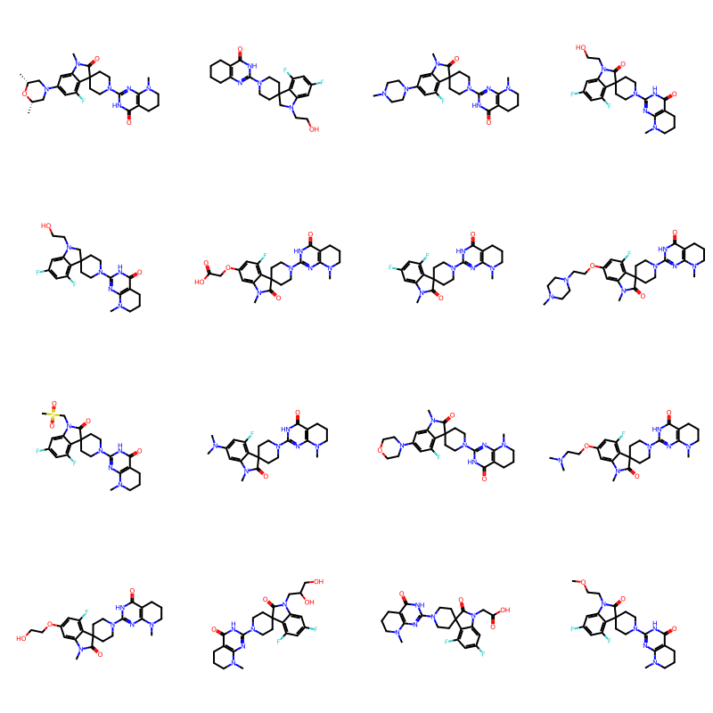
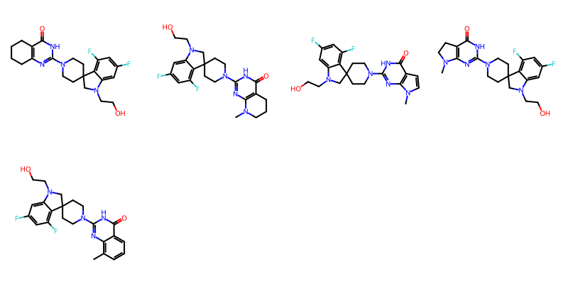
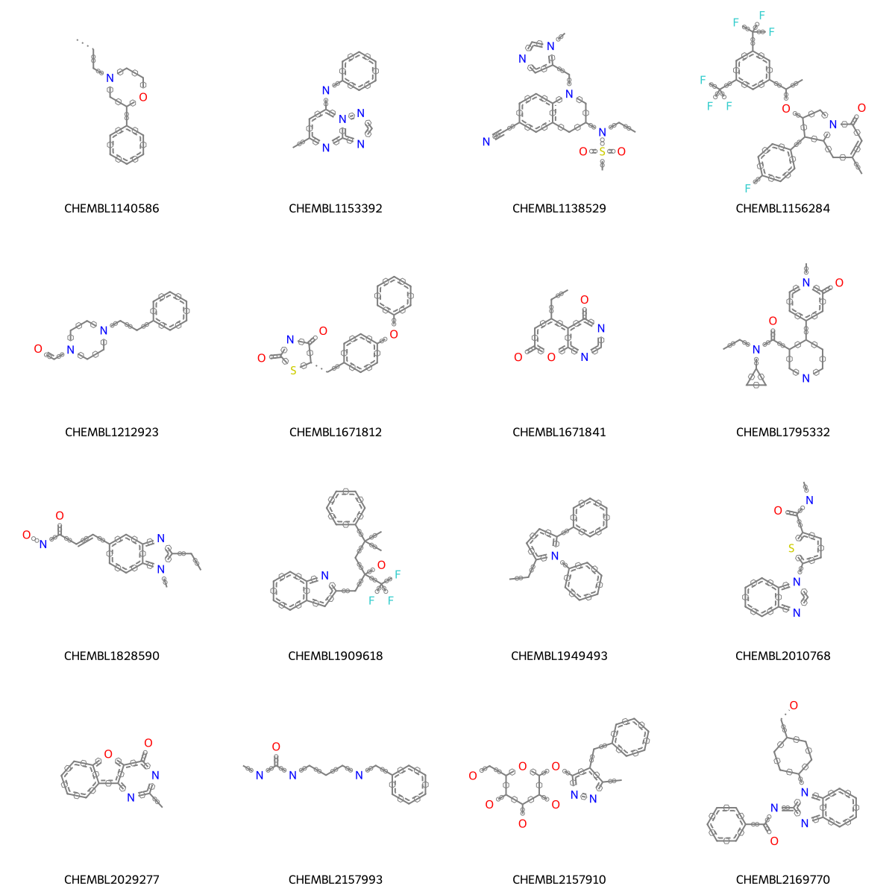

A set of scaffolds from CheMBL lead-optimization papers
I started looking at collecting a set of scaffolds from med chem papers a long time ago. I’ve gone back and refined the analysis a few times, but I haven’t written anything about it. This is an update for the most recent refinement I’ve done.
Instead of general ChEMBL papers, here I use sets of compounds from lead-optimization datasets (terminolog and explanations in this blog post. The general idea remains the same: approximate the scaffold for the compounds in a document as the maximum common substructure that covers a large fraction (generally 90%) of the compounds in the paper. In the previous analysis I used a fuzzy MCS that ignored atom types. I will repeat that here but also look for a specific MCS (i.e. one with specific atom types). In an attempt to only focus on the chemical series that was actually explored in the paper, for this analysis I use only the “local” compounds, those that are not present in a large number of other documents.
TL;DR After some experimentation, I ended up using specific MCSs (all atoms specified) to locate scaffolds in the lead-optimization data sets. I define a scaffold as the MCS that hits at least 80% of the molecules in the data set. In order to ensure that the scaffolds are of reasonable size, I only keep scaffolds where the number of atoms is at least 60% of the average number of atoms for molecules in the data set.
On to the work
Start with the preliminaries
We need to do a bunch of imports and define some functions we’ll use later.
# define a function to convert a query molecule to SVGfrom IPython.display import SVGfrom rdkit.Chem import rdDepictorfrom rdkit.Chem.Draw import rdMolDraw2Ddef moltosvg(mol,molSize=(450,250),kekulize=True): mc = Chem.Mol(mol.ToBinary())if kekulize:try: Chem.Kekulize(mc)except: mc = Chem.Mol(mol)ifnot mc.GetNumConformers(): rdDepictor.Compute2DCoords(mc) drawer = rdMolDraw2D.MolDraw2DSVG(molSize[0],molSize[1])# the MolDraw2D code is not very good at dealing with atom queries,# this is a workaround opts = drawer.drawOptions()for atom in mc.GetAtoms():if atom.HasQuery() and atom.DescribeQuery().find('AtomAtomicNum')!=0: opts.atomLabels[atom.GetIdx()]=atom.GetSmarts() drawer.DrawMolecule(mc) drawer.FinishDrawing() svg = drawer.GetDrawingText()return svg
# define a function to find the MCS for a set of molecules and return some summary info about that MCSimport time# we will use a namedtuple to return the resultsfrom collections import namedtupleMCSRes=namedtuple('MCSRes',('smarts','numAtoms','numMols','avgNumMolAtoms','mcsTime'))def MCS_Report(ms,printSmarts=True, atomCompare=MCS.AtomCompare.CompareAny, bondCompare=MCS.BondCompare.CompareAny, completeRingsOnly=True,**kwargs): t1=time.time() mcs = MCS.FindMCS(ms,atomCompare=atomCompare,bondCompare=bondCompare,timeout=30,completeRingsOnly=completeRingsOnly,**kwargs) t2=time.time() nAts = numpy.array([x.GetNumAtoms() for x in ms])print('Mean nAts %.1f, mcs nAts: %d'%(nAts.mean(),mcs.numAtoms))if printSmarts: print(mcs.smartsString) mcsM = Chem.MolFromSmarts(mcs.smartsString) mcsM.UpdatePropertyCache(False) Chem.SetHybridization(mcsM) svg = moltosvg(mcsM,kekulize=False) tpl = MCSRes(mcs.smartsString,mcs.numAtoms,len(ms),nAts,t2-t1)return tpl,svg
Grab the data
Load the lead optimization sets from the earlier blog post:
withopen('./results/lead_optimization_sets.pkl','rb') as f: df = pickle.load(f)df.shape
ms = doc_df['canonical_smiles'].apply(Chem.MolFromSmiles).to_list()Draw.MolsToGridImage(ms[:12],molsPerRow=4,legends=doc_df['compound_chembl_id'].to_list())
results = []seen = [x[0][0] for x in results if x isnotNone]doc_ids = df['doc_chembl_id'].unique()nrows =len(doc_ids)for i,did inenumerate(doc_ids):print(f'Doing row {i+1} of {nrows}')if did in seen:continue tpl = run_doc(df,did) results.append(tpl)ifnot (i+1)%100: pickle.dump(results,open('../data/scaffolds_lead_opt.pkl','wb+'))pickle.dump(results,open('../data/scaffolds_lead_opt.pkl','wb+'))
Write a CSV file too:
tmp = []for row in results: tmp.append((row[0],row[2].smarts,str(row[2].numAtoms/row[2].avgNumMolAtoms.mean())))withopen('../data/scaffolds_lead_opt.txt','w+') as outf:print('doc_chembl_id\tsmarts\tfraction_of_average_molecule_size',file=outf)for row in tmp:print('\t'.join(row),file=outf)
results2 = []seen = [x[0] for x in results2 if x isnotNone]doc_ids = df['doc_chembl_id'].unique()nrows =len(doc_ids)for i,did inenumerate(doc_ids):print(f'Doing row {i+1} of {nrows}')if did in seen:continue tpl = run_doc2(df,did) results2.append(tpl)ifnot (i+1)%100: pickle.dump(results2,open('../data/scaffolds_lead_opt_specific.pkl','wb+'))pickle.dump(results2,open('../data/scaffolds_lead_opt_specific.pkl','wb+'))
tmp = []for row in results2: tmp.append((row[0], row[2].smarts,str(row[2].numAtoms / row[2].avgNumMolAtoms.mean())))withopen('../data/scaffolds_lead_opt_specific.txt', 'w+') as outf:print('doc_chembl_id\tsmarts\tfraction_of_average_molecule_size',file=outf)for row in tmp:print('\t'.join(row), file=outf)
Look at some results
The data is organized in a dictionary with one entry per paper.
The MCS_Report() function defined above prints out the mean number of atoms per molecule in the input along with the size of the MCS. This is intended to help assess whether or not the MCS is actually a scaffold.
How many “scaffolds” of each type do we have in total?
Not bad! It’s still worth looking at the ones that are super small:
scaff_df[scaff_df.numAtoms <=6].head()
doc_chembl_id
numAtoms
avgNumMolAtoms
smarts
time
159
CHEMBL4196006
6
15.809524
[#6]1:&@[#6]:&@[#6]:&@[#6]:&@[#6]:&@[#6]:&@1
0.007589
187
CHEMBL4342498
2
33.600000
[#8,#6]=,-;!@[#6,#7,#8]
30.139387
222
CHEMBL4402562
4
20.441176
[#8,#6,#7]=,-;!@[#6,#16](-,=;!@[#8,#6,#7])-,=;...
0.001956
663
CHEMBL6087400
6
17.228070
[#6]1:,-;@[#6]:,-;@[#6]:,-;@[#6]:,-;@[#6]:,-;@...
0.036301
700
CHEMBL6103656
6
17.742857
[#6]1:,-;@[#6]-,:;@[#6,#7]-,:;@[#6,#7]-,:;@[#7...
0.284387
scaff_df2[scaff_df2.numAtoms <=6].head()
doc_chembl_id
numAtoms
avgNumMolAtoms
smarts
time
4
CHEMBL1136951
6
29.787879
[#6]-&!@[#6]1:,-;@[#6]:,-;@[#6]:,-;@[#6]:,-;@[...
0.015072
27
CHEMBL2034824
2
36.095238
[#6]-&!@[#6]
30.271687
54
CHEMBL3352559
6
23.371429
[#6]1:&@[#6]:&@[#6]:&@[#6]:&@[#6]:&@[#6]:&@1
0.005176
86
CHEMBL3785091
3
28.728395
[#8]=,-;!@[#6]-&!@[#6]
0.013217
106
CHEMBL4011608
6
18.257143
[#6]1:&@[#6]:&@[#6]:&@[#6]:&@[#6]:&@[#6]:&@1
0.006619
Look at compounds from one of those documents:
a = [x for x in results2 if x[0]=='CHEMBL4342498'][0]print(f'There are {len(a[1])} molecules for this document')mols = [Chem.MolFromSmiles(y) for y in a[1]]Draw.MolsToGridImage(mols[:16],molsPerRow=4)
There are 35 molecules for this document

There is clearly a scaffold there, it just doesn’t cover 90% of the molecules.
The molecules that don’t match the scaffold:
Draw.MolsToGridImage([x for x in mols ifnot x.HasSubstructMatch(Chem.MolFromSmarts('C1C(=O)Nc2ccccc12'))],molsPerRow=4)

What if we only require that the scaffold cover 80 or 85% of the molecules?
Start with the fuzzy MCS:
tpl = run_doc(df, 'CHEMBL4342498', threshold=0.8)
35 molecules found for document CHEMBL4342498
Mean nAts 33.6, mcs nAts: 28
[#8]=&!@[#6]1:&@[#7]:&@[#6](-&!@[#7]2-&@[#6]-&@[#6]-&@[#6]3(-&@[#6]-&@[#6]-&@2)-&@[#6]-&@[#7](-&@[#6]2:&@[#6]-&@3:&@[#6](:&@[#6]:&@[#6](:&@[#6]:&@2)-&!@[#9,#7,#8])-&!@[#9])-&!@[#6]):&@[#7]:&@[#6]2:&@[#6]:&@1-,:;@[#6]-,:;@[#6]-,:;@[#6]-,:;@[#6,#7]-,:;@2
35 molecules found for document CHEMBL4342498
Mean nAts 33.6, mcs nAts: 23
[#8]=&!@[#6]1:&@[#7]:&@[#6](-&!@[#7]2-&@[#6]-&@[#6]-&@[#6]3(-&@[#6]-&@[#6]-&@2)-&@[#6]-&@[#7](-&@[#6]2:&@[#6]-&@3:&@[#6](:&@[#6]:&@[#6]:&@[#6]:&@2)-&!@[#9])-&!@[#6]):&@[#7]:&@[#6]:&@[#6]:&@1
35 molecules found for document CHEMBL4342498
Mean nAts 33.6, mcs nAts: 2
[#8]=,-;!@[#6]
Repeat the run and only require that the scaffold match 80% of the molecules in the documents where the MCS covered less than 60% of the average number of atoms
relaxed_results2 = []scaff_df2['scaff_frac'] = scaff_df2.numAtoms / scaff_df2.avgNumMolAtomsto_expand = scaff_df2[scaff_df2.scaff_frac <0.6]doc_ids = to_expand.doc_chembl_id.unique().tolist()nrows =len(doc_ids)for i, did inenumerate(doc_ids):print(f'Doing row {i+1} of {nrows}') tpl = run_doc2(df, did, threshold=0.8) relaxed_results2.append(tpl)pickle.dump(relaxed_results2, open('../data/scaffolds_lead_opt_specific_relaxed.pkl', 'wb+'))
Repeat the run again and only require that the scaffold match 70% of the molecules in the documents where the MCS from the 80% threshold covered less than 60% of the average number of atoms
relaxed_results3 = []relaxed_scaff_df2['scaff_frac'] = relaxed_scaff_df2.numAtoms / relaxed_scaff_df2.avgNumMolAtomsto_expand = relaxed_scaff_df2[relaxed_scaff_df2.scaff_frac <0.6]doc_ids = to_expand.doc_chembl_id.unique().tolist()nrows =len(doc_ids)for i, did inenumerate(doc_ids):print(f'Doing row {i+1} of {nrows}') tpl = run_doc2(df, did, threshold=0.7) relaxed_results3.append(tpl)pickle.dump(relaxed_results3,open('../data/scaffolds_lead_opt_specific_very_relaxed.pkl', 'wb+'))
scaffs = [Chem.MolFromSmarts(x) for x in combined_df.smarts.tolist()]Draw.MolsToGridImage(scaffs[:16],molsPerRow=4,legends=combined_df.doc_chembl_id.tolist()[:16], subImgSize=(300,300))

We could do a bit of cleaning up here, but these don’t look terrible.
Wrapping up
There’s a lot more we can do with this set of scaffolds. There are more posts to come…